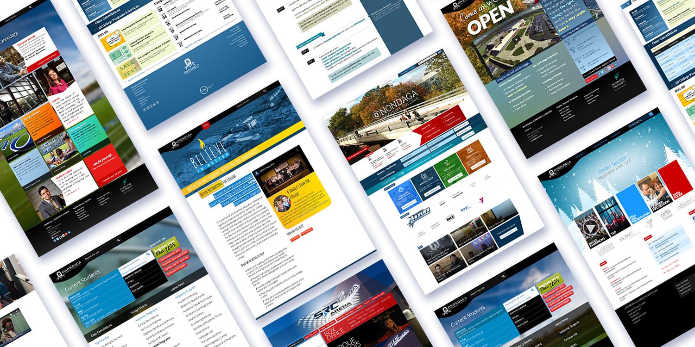

Here's a selection of my work.
15 years managing an evolving ecosystem of websites for Higher Ed
Directed multiple redesigns, redevelopments, and realigns. Organized complicated information architectures for multiple audiences and business pipelines. Added new functionality, standalone web apps, and 3rd party integrations. Created a library of reusable code and style objects. Managed massive content migrations to new content management systems. Led, trained and mentored a dozen team members in key web concepts, HTML & CSS, user-centered design, user journey mapping, information architecture, usability testing, web accessibility, content strategy, and content management.

Reimagined the entire business process to create a better UX
What started as a simple whiteboard sketch to help me better understand an isolated issue revealed systemic problems across the entire business process. Given the opportunity to explore more deeply, I reimagined how Higher Ed might better operate. I advocated for removing hurdles for students and encouraged the adoption of successful customer service models from other industries. The resulting concept sketch ignited multiple projects across the College, serving as a roadmap for strategic planning at the highest levels. Waves can still be seen today as they make sweeping changes in how they operate and treat their customers.
Here's my resume
Lead Web Architect / Web Team Manager — 2005–Present
Onondaga Community College — Syracuse, NY
Key Responsibilities
- team lead
- product management
- visual design
- front-end development
- information architecture
- UX testing
- strategic planning & analysis
- project management
- process improvement
- browser/platform compatibility
- accessibility compliance
- content strategy
- content management
Major Achievements
Recognition
Lead Designer — 2000–2004
Blue Willow Designs — Syracuse, NY
- managed all business, marketing and customer service efforts
- directed, designed, and developed all related creative media for several small business websites
Web Assistant, Publicity Manager, Graphic Designer — 1999–2002
SUNY Geneseo — Geneseo, NY
- developed and maintained multiple department websites
- trained and supported the campus community in web design concepts and tools
- designed, produced, and distributed publicity for the Schools of Performing and Fine Arts
Web Intern — 2000
SUNY Upstate Medical University — Syracuse, NY
- assisted in a complete website overhaul for the University and 5 Colleges
- introduced CSS to the University web team
Education
Bachelor of Arts — 2002
SUNY Geneseo — Geneseo, NY